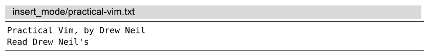
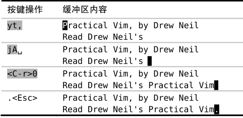

），而J命令则用来把当前行和下一行连接在一起（参见:h J）。也就是说，如果你不小心切换到了大写模式，你将会惊讶地发现，缓冲区的内容怎么这么快就乱掉了！
），而J命令则用来把当前行和下一行连接在一起（参见:h J）。也就是说，如果你不小心切换到了大写模式，你将会惊讶地发现，缓冲区的内容怎么这么快就乱掉了！ 技巧15不离开插入模式，粘贴寄存器中的文本
Vim的复制和粘贴操作一般都在普通模式中执行，不过有时我们也许想不离开插入模式，就能往文档里粘贴文本。
下面是一段尚未完成的文本：

重新映射大小写转换键（Caps Lock）
对Vim用户而言，大小写转换键是一个威胁。如果大小写转换键处于大写模式，而你尝试用k或j去移动光标，那么你触发的将会是K和J命令。简单地讲，K命令用于查看处于光标之下的那个单词的手册页（参见:h K），而J命令则用来把当前行和下一行连接在一起（参见:h J）。也就是说，如果你不小心切换到了大写模式，你将会惊讶地发现，缓冲区的内容怎么这么快就乱掉了！
很多Vim用户都会重新映射大小写转换键，把它当成另外一个键用，比方说<Esc>或<Ctrl>。在现代键盘上，<Esc>键很难够得到，而大小写转换键却很方便。把大小写转换键映射成<Esc>键可以省很多力气，尤其是Vim对<Esc>键用得这么频繁。不过我更喜欢把大小写转换键映射为<Ctrl>键。<C-[>的功用和<Esc>键相同，如果<Ctrl>键触手可及，那么这一组合键输入起来也会很容易。另外，不管是在 Vim中还是在其他程序中，很多快捷键也都会用到<Ctrl>。
要重新映射大小写转换键，最简单的方法是在操作系统级别进行映射。不过对于OS X、Linux及Windows来说，其映射方法各不相同。因此，我不会在这儿重复每种系统的映射方法，而是建议你用Google搜索一下。注意，这一定制不仅会影响Vim，还会作用于整个系统。不过，如果你照我的建议做，你将会永远忘掉大小写转换键，我保证你不会怀念它。
我们想把本书的书名插到最后一行，以补全该行。由于书名在第一行的开头已经出现过了，我们将把它复制到一个寄存器中，然后在插入模式中把它添加到第二行结尾。

yt,命令把“Practical Vim”复制到复制专用寄存器中（我们将在技巧49中结识t{char}动作命令），然后我们在插入模式中，按<C-r>0把刚才复制的文本粘贴到光标所在位置（我们将在第10章以大量的篇幅介绍寄存器以及复制操作）。
这个命令一般的格式是<C-r>{register}，其中{register}是我们想要插入的寄存器的名字（参见:h i_CTRL-R:h aw）。
对面向字符的寄存器使用<C-r>{register}命令
在插入模式中，可以用<C-r>{register}命令很方便地粘贴几个单词。可是如果寄存器中包含了大量的文本，你也许会发现屏幕的更新有些轻微的延时。这是因为Vim在插入寄存器内的文本时，其插入方式就如同这些文本是由键盘上一个个输进来的。因此，如果 ‘textwidth’或者‘autoindent’选项被激活了的话，那么最终就可能会出现不必要的换行或额外的缩进。
<C-r><C-p>{register}命令则会更智能一些，它会按原义插入寄存器内的文本，并修正任何不必要的缩进（参见:h i_CTRL-R_CTRL-P ），不过这个命令有点不太好输入！因此，如果我想从一个寄存器里粘贴很多行文本的话，我更喜欢切换到普通模式，然后使用某个粘贴命令（参见技巧62）。